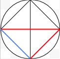

This is my Math IA written for IB. Completed winter 2020.
This IA is meant to give information regarding the handshake problem and to find ways to reliably solve it. This is accomplished primarily using equations, but diagrams are used too. These diagrams are meant to be a way to visualize the problem and to give reliable checks on the equations.
The aim of this paper is to give a resource to teachers, as the handshake problem is a common math problem given to students (NZMaths). The equations can be used to check student work or as teaching material in and of itself. The standard equation, highlighted in the standard variation method section, is corroborated by my sources (see works cited).
Some definitions: Variation - Given to the two other problems that are based off the main handshake problem. N - meaning the number of people in a given scenario. H - the number of handshakes performed, only one interaction between a pair of people is counted. P - the number of people in a party, all parties must have the same number of people. Model - a graphic representation, specifically of the handshake problem.
In the handshake problem you are at a dinner party with n number of people. As is customary you shake hands with everyone there, and everyone there shakes hands with you and everyone else. The problem asks how many handshakes were performed at this dinner party?(Connelly)
This problem is standard for Middle school students, by putting the students into small groups and having them reenact this scenario amongst themselves.
This image shows a group of four at the dinner party (n = 4) and we can very simply count the number of lines to get h or the number of handshakes. Here it shows 6 handshake combinations.
This version of the handshake problem is fairly simple. It doesn’t take very long to figure out. With small values it’s easy to do, but the reenactment method only works with small numbers. For instance this is the drawing that you would have to do for when n = 8:
With this version it gets hard to keep track of how many handshakes are possible. This method is useful for small numbers, but when numbers go into the double digits, another method is needed.

To find an equation that works for this problem, we can look at what makes the circle method work. To start this method I planned out how many people were in the scenario, so the equation will have to have an n value, for this instance I will use n=4. Once we get the amount of people, and have them arranged in the circle, we connect a line between the first person and all of the others. The second person will do the same, but we don't connect a line between them and the person before them, because that handshake had already been made. Finally we have the third person who will only make one one handshake with person four. Here we have the different stages color coded, it goes 3 handshakes with the first person, then two with the second, then one with the third.
We know that when n = 4 then h = 6, and we can see that clearly in the diagram here. But now we need to make an equation out of it. I notice that the number of handshakes goes down by one each time so somewhere in the equation there has to be a n-1 feature. Then we have to take into account that this is happening multiple times, so n(n-1) is how to show that. The basic equation is h = n(n-1), but this actually gives double the number we want.
I believe that this is because the equation isn’t indiscriminate and takes counts handshakes both ways, so it counts person one shakes person twos hand and vice versa as different handshakes, but in the real world this doesn’t make sense. I adjusted the equation slightly to h =n(n-1)2(Hedegaard), which halves the number of handshakes and gives us the correct amount.
This equation will work with high numbers of people, where the circle method is limited to how complex someone can make it before they make mistakes. For instance we can get a party of 100 people's handshake number as h =100(100-1)2, which come to 4,950 handshakes. Drawing 4,950 lines in a circle would be difficult, so the standard method works better than the circle method.
There is a variation of the handshake problem called the pair handshake problem, which takes the basic idea of the handshake problem (described above) and adds extra complexity to it. The problem is that you are at a dinner party with your partner with n number of guests (it’s a couple’s party so n is an even number) and you shake hands with everyone there. This is different from the normal problem because you don’t shake hands with your partner, and other partners don’t shake hands with each other either.
This means you need a modified version of the standard method’s equation, and just like the previous version, there is a way to represent the problem visually. This model which uses the circle method of representing this problem, is different from the original model because of the pairs of dots on the rim of the circle. These dots again represent people in pairs, described in the pair variant problem. Just like in the problem they are linked to others from the other pairs, but they are not linked within the pair, and looking at this model the adjustment to the original equation can be made.
One thing that is useful to notice is the numbers next to each dot located on the model, each labeled 6. These numbers are the amount of links to other dots that they have, so all the numbers should have the same amount. (If not then something would be wrong with the model.) To find the total amount of handshakes just add up the 6’s. 6*8 = 48, and then divide by two; 24. Twenty four is the number of handshakes, and it was determined using the previous method, so it is provable that the pair equation will use the old equation.
If we put in the number of people into the old equation we would get 28 handshakes, and with the circle method we got 24, so there are a difference of 4 handshakes lost with the pair rule being added. So the first iteration of the pair equation is h = n(n-1)2-4. Immediately there are problems with this equation, with any value of n other than 8 being unequal. To find out how to generate this subtracted number I made more circle models with different n values. When n = 6 the difference between the pair and standard answer was 3 and when n = 4 the difference was 2. The pattern is that the difference is half of the n value, which is subtracted from the original equation. Meaning that the equation for the pair variation on the handshake problem is h =n(n-1)2-n2.
The group variation is a variation on the handshake problem that goes as follows: You and your two friends meet up with a group of three people at a dinner party, you and your friends shake the three others’ hands, and they all shake you and your friends’ hands. You do not shake your friends’ hands, and the other group does not shake each others’ hands. How many handshakes were performed? The problem takes p number of people in a group. P can be any number larger than 2 and that is a whole number. Like the pair variation there is an exclusionary element to this problem, but unlike that variation the h =n(n-1)2 -n2 Does not work.
The equation to answer this problem is deceptively simple. This circle model shows the interaction between the six participants. As shown, n = 6 in this scenario, and counting the lines there are nine interactions, so h = 9. On each dot, representing one person in the problem, is three interaction lines that lead to three people in the opposite group. There are seemingly eighteen of these lines but we just see both sides of them, so we half them into 9. The same principle is used in the other two equations.
If we multiply our n value by our party (p) value then we get eighteen. Then it can be divided into 9, which is the h-value. The equation to find the solution to the group variant problem is h=n*p2.
Though only two groups are shown in the circle model, this equation works for multiple groups too.